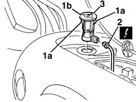
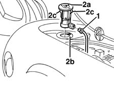

5580C26 LOCK BARREL KEY/SWITCH for deactivating passenger 'AIR BAG - R.R.
- Path
- Procedures > 55 ELECTRICAL EQUIPMENT > 5580 SPECIAL ACCESSORIES > 5580C AIR BAG SYSTEM > 5580C26 LOCK BARREL KEY/SWITCH for deactivating passenger 'AIR BAG - R.R.
- Kind
- repair procedure (removal / refitting; the operation number is the code)
- Applies to
- all engines; all production periods
- Interactive page
- https://sloeber94.github.io/elrnDB-fMltpl/en/#/2891974
Applies to: all engines; all production periods
Applies to: all engines; all production periods
 Removing
Removing
 Refitting
Refitting7040A37 fuse box cover - r r .
1. Gain access via the junction unit cover opening and release the retainers (1a) and remove the switch (1b).
2. Disconnect the electrical connection.
 | Name | Connector |
|---|---|---|
2 | Passenger's Air Bag disablement switch |
3. Recover the switch.

Applies to: all engines; all production periods
Refitting
RemovingCheck that the switch is not damaged and, if necessary, conduct an electrical test on it.
1. Connect the electrical connection.
2. Insert the switch (2a) in the housing, engaging the tab in the housing (2b).
Attach the retainers (2c).

Applies to: all engines; all production periods
7040A37 fuse box cover - r r .
Connect the battery.
Check the operation of the system using the Examiner or the other diagnostic equipment.
Topics linked from this page (2)
Topics that link to this page (45)
- K82 PASSENGER AIR BAG DISABLED WARNING LIGHT
- 2125C14 gear hand-lever mount bracket (one)- r r
- 2125C16 gear hand-lever - r r
- 2125C28 gear control lever - r r
- 2125C30 gear engagement cable - r r
- 5010B08 VENTILATION SYSTEM OUTSIDE AIR PURIFYING FILTER (ANTIPOLLEN) - R+R
- 5010B24 under-facia air ducts r r
- 5010C30 central air outlet on fascia - r+r
- 5010D18 top mixed air temperature sensor - r+r following electrical wiring check with heater case removed
- 5020A10 heater box - r+r
- 5020A50 heater radiator - r+r
- 5020B10 heater control support - r+r
- 5020B38 air distribution flap control cable - r+r
- 5020B42 air mixer flap control cable - r+r
- 5020B80 heater system wiring bundle - r r or replace
- 5020M07 RECEIVER for remote control ADDITIONAL INDEPENDENT HEATER - R.R.
- 5040B30 expansion valve (tube orifice) - r+r
- 5040B64 sensor on evaporator for a/c ecu - r + r
- 5040C10 air conditioner box - r+r
- 5040C50 air conditioner heater radiator - r+r
- 5040C64 a/c evaporator - r+r
- 5040C10 air conditioner control support - r+r
- 5040C38 air distribution flap control cable - r+r with control support removed
- 5040C40 air mixer flap control cable - r + r
- 5040C52 air inlet and recirculation flap actuator - r r
- 5040C90 air conditioner system wiring bundle - r r
- 5040D77 air conditioner mixer flap control motor - r r
- 5505C31 under-facia wiring - r r
- 5505C41 cabin wiring - r r
- 5520A16 ignition key block - r+r replace with different unit
- 5540C18 headlamp/light cluster alignment correction motor switch - r+r
- 5580C22 AIR BAG MODULE - Passenger side - R.R.
- 5580C80 airbag system wiring bundle - r r or replace
- 5580E30 receiver for car alarm remote control - r r
- 5580M18 navigation system mount(1), lh or rh - r r
- 5580M80 on-board navigator system wiring harness - r r
- 5580M84 navigation system mount junction unit - r r
- 7005M40 front electric window system ecu - r+r following electrical wiring check
- 7025A24 boot lid opening lever - r+r
- 7040A04 facia lower trim-r r
- 7040A25 central facia trim - r r
- 7040A44 facia lh side cover - r r
- 7040A45 facia rh side cover - r r
- 7040A75 bottle holder on facia trim - r r
- 7040H30 front pillar trim - r r